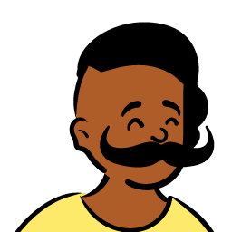

01
Cross-platform
architecture
Clean architecture and BLoC across 34 flavours from one codebase. Multi-flavour infrastructure that does not special-case its way into a corner.
Loading
spinning the web…
0%
Friendly neighbourhood Flutter developer. I ship 34 app flavours from one codebase to 60 million people in 180 countries — and I write down what broke on the way.
Scroll ↓
— what I actually do —
Seven of them, and they are specific.
01
Clean architecture and BLoC across 34 flavours from one codebase. Multi-flavour infrastructure that does not special-case its way into a corner.
02
Platform channels, and native ad factories and platform views written on both iOS and Android — one Dart codebase, two native stacks, neither of them special-cased.
03
Outbox queues with backoff and a written conflict rule. VoIP and WebRTC calling that survives a network drop, with call state persisted and recovered across the app lifecycle.
04
Ad platform built from zero — seven mediation networks, remote-configurable placements, and session-aware prefetch that ended empty slots. Age verification behind a fail-open plugin across four jurisdictions.
05
Unit, BDD widget, integration and Maestro. The tests worth writing are the ugly ones — truncated packets, killed processes, stale versions.
06
Bitrise, Fastlane and GitHub Actions. An 80% cut in deployment time is the difference between bi-weekly releases and releases when someone is free.
07
Claude in the loop daily. Ask for the seam, not the feature; make it write the limitation down; and never let a green test suite stand in for looking.
— the missions —
Five that are worth opening. One of them you can run in this browser.

M-01 · live in your browser
A Flutter reference app built to be read as much as run. Ten production-grade features in one codebase, each with the trade-off it makes written down beside the working code — offline-first sync over SQLite with an outbox queue and a documented conflict rule, an LLM agent loop with typed tool schemas, server-driven UI on a versioned schema, and a WCAG AA audit with computed contrast ratios.

M-02 · 2025 → now
34 app flavours, one codebase, 60M members. Built the ad monetisation platform from zero — banner, interstitial and native formats, seven mediation networks, all of it remote-configurable so experiments ship without a release. Extended Akamai bot protection from three endpoints to the whole account surface, and cut sign-in crash noise by 40% moving to Google Sign-In v7 with Credential Manager.

M-03 · Unico Connect
Audio-video calling on the Stream SDK. Call initiation, acceptance and background handling, platform-specific call UI with custom ringtones, and reconnection through network drops — with call state persisting across the app lifecycle.

M-04 · Bottlecap
A form builder that renders text, checkbox, radio, dropdown, signature and file-upload fields from API configuration alone — multi-step validation with section progress, digital signatures and PDF generation.

M-05
Real-time order tracking over FCM, an interactive product designer with image manipulation and frame customisation, and an admin dashboard for order and delivery management. Offline persistence on Hive.
— the only rule —
Anyone can make it work.
The job is making it cheap to change
— what thirty-four flavours teach you
Page 1 — origin story
Thirty-four flavours, 43 languages, 180 countries — all out of one Dart codebase. At that size a shortcut stops being a shortcut: a hardcoded string is a store review in four jurisdictions, and a bad default reaches 60 million people before a fix can ship. So the job stops being “make it work” and becomes “make changing it cheap” — remote config instead of releases, flavour-aware CI instead of manual builds, and a written reason behind every trade-off.
01 / 04

34 flavours, 60M members. Ad monetisation built from zero, age-verification compliance in four jurisdictions, Akamai bot protection, the Sentry migration.
02 / 04
Audio-video calling on the Stream SDK. Call state that survives the app lifecycle, background handling, and reconnection through real network drops.
03 / 04
Social, dating and e-commerce, then manufacturing tooling. A form builder that renders itself from API config — my first taste of server-driven UI.
04 / 04

Six apps across crypto, fashion, logistics and automotive. Learned to ship before learning to architect — the right order, it turns out.
— meanwhile, in the standup —

— field report —
Everything below is production, not a side project.
0
Registered members
0
App flavours, one codebase
0
Countries served
0
Languages shipped
0
Installs per month
0
Deploy time removed
0
Test coverage
0
Shipping Flutter
— last page —
Got something worth building?
Open to senior Flutter roles. If you are building something that has to work offline, ship to a lot of people at once, or survive a store review — that is the part I like.
Spinner
Rushabh’s assistant